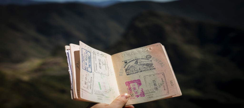
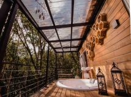
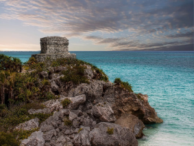

<!DOCTYPE html>
<html lang="pt-br">
<head>
    <meta charset="UTF-8">
    <meta http-equiv="X-UA-Compatible" content="IE=edge">
    <meta name="viewport" content="width=device-width, initial-scale=1.0">
    <link rel="stylesheet" href="_css/noticias.css">
    <link rel="shortcut icon" href="_imagens/_noticias/logob.png" type="image/x-icon">
    <title>Voa.com</title>
</head>
<body>
    
</body>
</html>
<body>
    <div id="interface">

        <header id="cabecalho">

            

            <div id="pesquisa">
                
            </div>

            <nav id="menu">
                <ul>
                    <li><a href="noticias.html">Noticias</a></li>
                    <li><a href="destinos.html">Destinos</a></li>
                    <li><a href="mochileiros.html">Mochileiros</a></li>
                </ul>
            </nav>

        </header>

        <header id="titulo">
            <h1>Fica por dentro do que rola!</h1>
        </header>

        <div id="esquerda">

            <article id="america">
                
                <h2>Saibam quais são os países da América do Sul reabertos para brasileiros</h2>
                <p>Infelizmente a pandemia não acabou, mas algumas cidades no país já retomaram suas atividades
                    turísticas, o que ocorre também em alguns países vizinhos, sobretudo para os seus próprios cidadãos; mas como esta a situação para viajantes brasileiros?</p>
                <h3>Saiba mais...</h3>
            </article>

            <div id="noticias-menores">

                <article id="bolivia">
                    
                    <h2>Seguro Viagem Bolívia: como contratar e outras dicas importantes</h2>
                    <p>De Amazônia, ao maior deserto de sal do mundo, passando por paisagens surreais, além de ricas cultura e história, a Bolívia</p>
                    <h3>Saiba mais...</h3>
                </article>

                <article id="equador">
                    
                    <h2>Seguro viagem Equador: como contratar e outras dicas importantes</h2>
                    <p>Com o avanço (ainda que menos rápido do todos gostaríamos) da vacinação alguns brasileiros já voltam ...</p>
                    <h3>Saiba mais...</h3>
                </article>

                <article id="gramado">
                    
                    <h2>Chalés em Gramado: 7 sugestões para você curtir o melhor da Serra Gaúcha</h2>
                </article>

                <article id="rio">
                    
                    <h2>10 lugares para viajar no Rio de Janeiro</h2>
                </article>
            </div>

        </div>

        <aside id="direita">
            <article id="mexico">
                
                <h2>Seguro Viagem México: saiba como contratar o seu e viajar ao país</h2>
                <p>O México é um dos poucos países que estão abertos sem grandes restrições para viajantes de todo o mundo, incluindo brasileiros...</p>
                <h3>Saiba mais...</h3>
            </article>
        </aside>

        <div class="clearfix"></div>

        <footer id="rodape">
            <div>
                <p id="dados">Informação Empresa</p>
                <p class="dados2">Tel.: (11) 4100-0000</p>
                <p class="dados2">Email: voa@com.br</p>
                <p class="dados2">CNPJ: 01.001.001/0001-01</p>
                <div id="logob"></div>
            </div>
        </footer>

    </div>

</body>

</html>